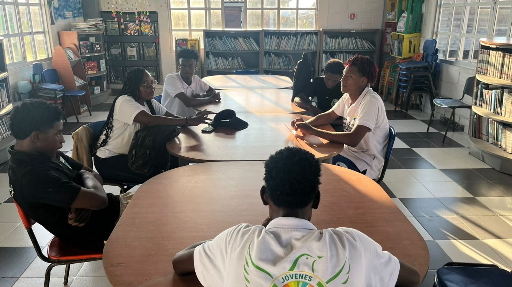
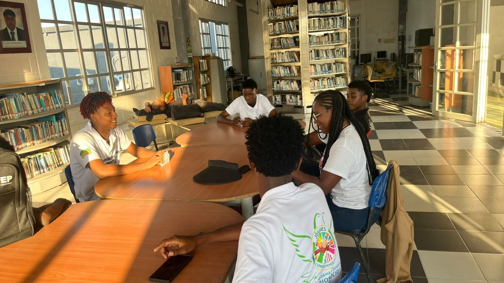
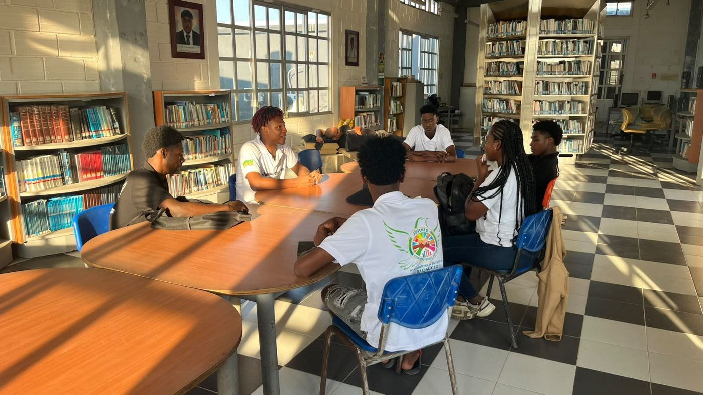

Recibimos la visita de “Del Territorio al Futuro” para la dotación de la Escuela de Tecnologías
Recibimos la visita del funcionario del proyecto Del Territorio al Futuro, del FonIgualdad, para consolidar la donación que recibirá la plataforma en el marco del proyecto. Nuestra iniciativa “Educando para cambiar la vida con las TIC”, la Escuela de Tecnologías, fue una de las seleccionadas.
Con esta dotación llegarán a la plataforma computadores, impresoras, un panel y otros implementos para la sala de sistemas. Con ellos seguiremos formando en herramientas digitales a jóvenes, víctimas del conflicto armado y otras personas del casco urbano y la ruralidad de Riosucio.
Conoce la Escuela de Tecnologías →


